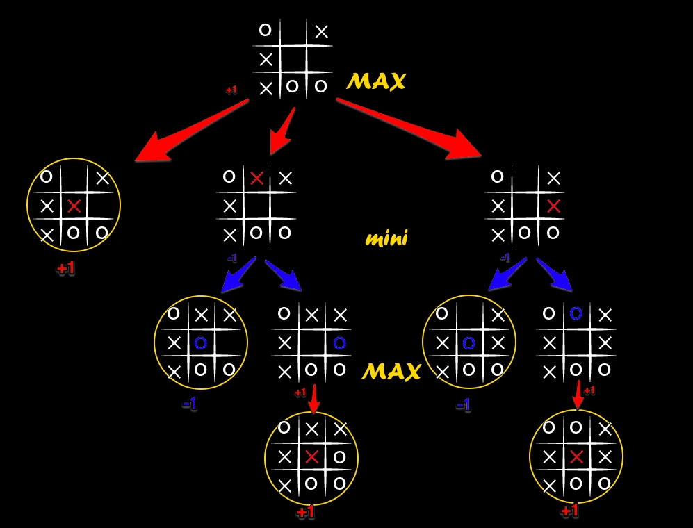

This project implements the classic game of Tic Tac Toe with an
unbeatable AI opponent. The AI is built on the Minimax
algorithm, improved with Alpha-Beta pruning for efficiency.
Despite the simplicity of Tic Tac Toe, the project is an excellent
introduction to game tree search, a fundamental technique in AI.
Minimax is a recursive search algorithm used to decide the best move in two-player games. The idea is simple:
At each turn, the algorithm explores all possible moves, simulates the outcome, and assigns a score: win (+10), loss (−10), or draw (0). These scores propagate upwards in the game tree, allowing the AI to pick the move that guarantees the best final outcome.
// Defining the return type object
typedef struct {
int value;
int action;
} SearchResult;
// Minimax algorithm with alpha-beta pruning
SearchResult MiniMax(int current_board[9], const int current_turn, const int depth, int alpha, int beta) {
// check win or filled stop conditions
int win = is_win(current_board);
// if win return the score giving higher value depending on the depth
// if searching | more depth => worse
// if not searching | more depth => better
if (win) return (SearchResult){ (win == turn ? 10 - depth : depth - 10), -1 };
if (is_board_filled(current_board)) return (SearchResult){0, -1};
// create a best_result and best_value object with best_value depending if mini or maxing
SearchResult best_result = (SearchResult){(current_turn == turn) ? -11 : 11, -1};
// loop over all the indicies
for (int action = 0; action < 9; action++) {
// if already taken skip
if (current_board[action] != EMPTY) continue;
// temporary set the action value
current_board[action] = current_turn;
SearchResult result = MiniMax(current_board, (current_turn == PLAYER_1) ? PLAYER_2 : PLAYER_1, depth+1, alpha, beta);
// reset the action
current_board[action] = EMPTY;
// check max if current_turn == turn else min
if ((current_turn == turn && result.value > best_result.value) ||
(current_turn != turn && result.value < best_result.value)) {
best_result.value = result.value;
best_result.action = action;
}
// update alpha and beta
if (current_turn == turn) {
if (best_result.value > alpha) alpha = best_result.value;
} else {
if (best_result.value < beta) beta = best_result.value;
}
// prune the action
if (beta <= alpha) { break; }
}
return best_result;
}While Minimax explores every possible game state, many branches are unnecessary because optimal play would never reach them. Alpha-Beta pruning introduces two bounds:
If at any point beta ≤ alpha, the current branch can be
cut off safely — no need to explore further, as a better move is
already known. This reduces the search space dramatically without changing
the result.
Enter move as:
- row col (e.g., 1 2 for col=1, row=2)
- index (0–8, left-to-right | up-to-bottom)
// Choose AI player (X or O) and whether to enable
// move suggestions at the start.Although Tic Tac Toe is a trivial solved game, this project is a hands-on example of how adversarial search works. The same ideas scale up to more complex games such as Chess, Go, or Connect Four — where pruning, heuristics, and evaluation functions become essential.
To compile and run the project on Windows, you can use the provided
compile.bat script. This script ensures a build
directory exists, compiles all .c files with debugging
information and strict warnings enabled (-Wall -Wextra), and then
launches the resulting executable.
@echo off
setlocal
cls
REM Ensure build directory exists
if not exist build (
mkdir build
echo Created build directory.
)
REM Compile all C files with debug info and warnings enabled
gcc -g -Wall -Wextra *.c -o build\app.exe
REM Check if compilation succeeded
if errorlevel 1 (
echo Compilation failed. Please fix errors and try again.
pause
exit /b 1
) else (
echo Build completed successfully.
echo Running the application...
)
build\app.exe
endlocal
This approach simplifies the development cycle: just run
compile.bat and your code will be rebuilt and executed
automatically. It also ensures that any warnings are shown, helping you
maintain clean, portable code.